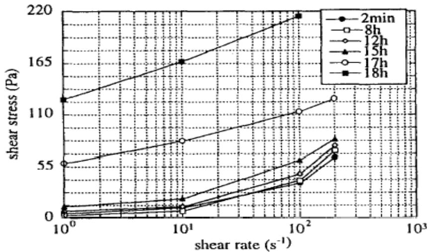
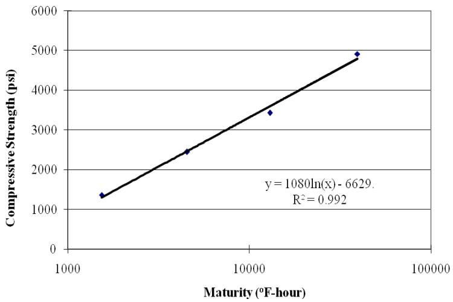
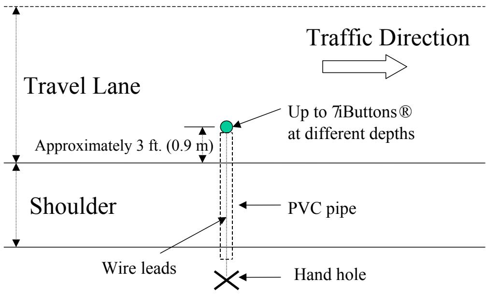
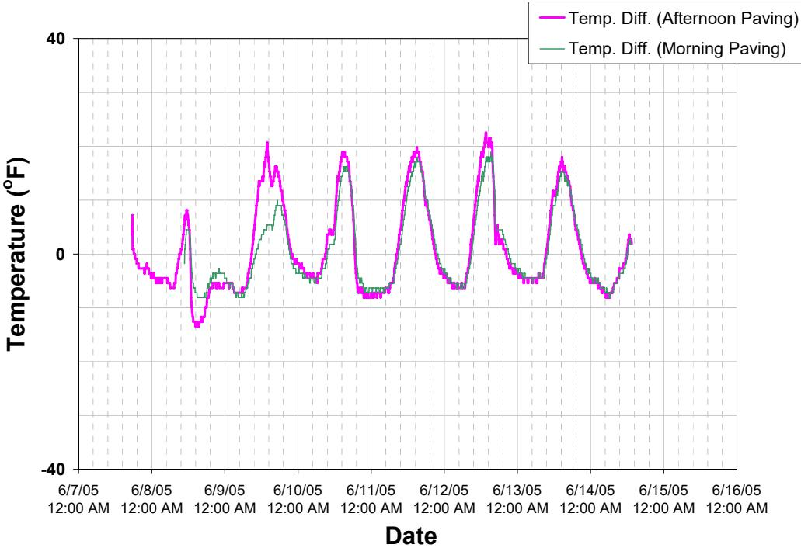
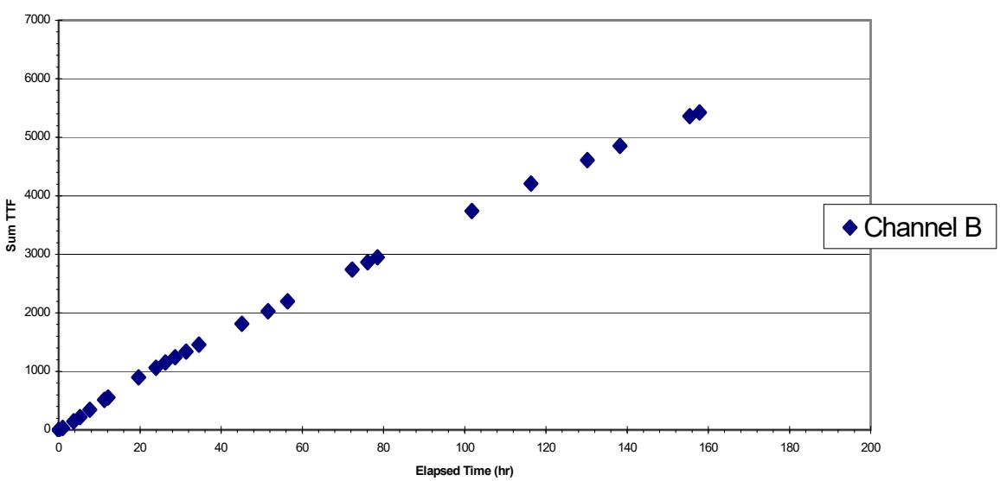
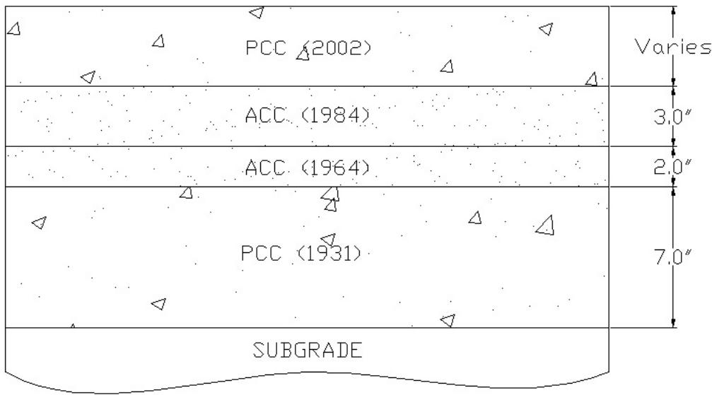
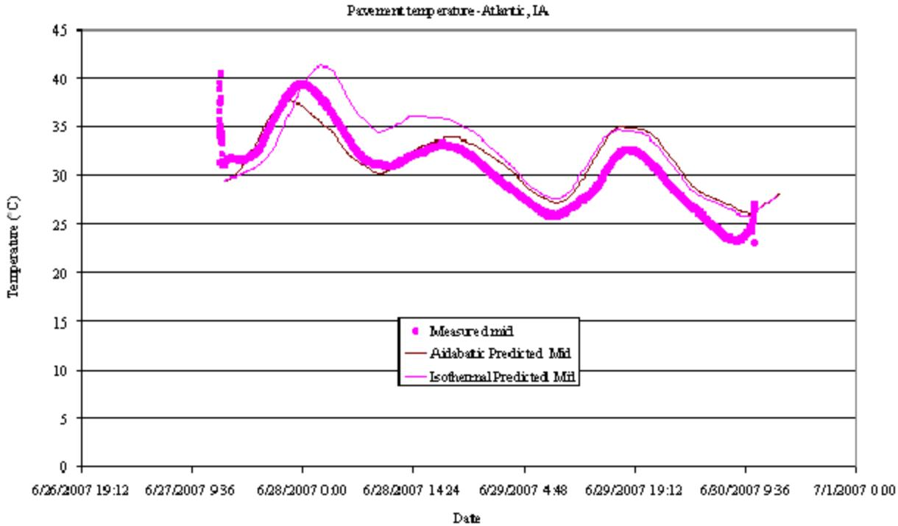

Maturity Method
The Maturity Method is a technique within the broader field of Hydration, Heat & Maturity that utilizes temperature monitoring to estimate concrete strength development. Grounded in the principle that hydration rate is temperature-dependent, it calculates an equivalent age index using approaches such as the Nurse-Saul method via the Time-Temperature Factor with a Datum Temperature, or the Arrhenius-based method defined by Activation Energy. Maturity is computed as $M(t) = \Sigma(T_a - T_o)\Delta t$, where $T_a$ is average concrete temperature, $T_o$ is datum temperature (14°F), and $\Delta t$ is the time interval. This method assumes an exponential relationship between temperature and strength development [6], correlating calculated maturity with compressive strength to predict when pavement can safely be opened to traffic based on strength rather than chronological age [1]. The practical application of these indices for this purpose is detailed in Maturity Testing for Concrete Opening Strength [2]. Additionally, a separate FHWA-funded study evaluated multiple maturity measurement devices side-by-side.
Sources (20)
Sub-concepts (4)
Rheological Models for Materials
Regarding material properties, rheological models such as the Bingham model, Herschel-Bulkley method, and Casson method are used to fit properties of materials like flocculated slurries [3], though yield stress values of flocculated slurries can be consistently determined using a simple vane apparatus [3].

Delayed increase in rheometric properties due to continued stirring [3]Maturity-Strength Correlations and Models
High-early strength mixes designed for accelerated paving require specific maturity/strength gain characteristics to be incorporated into guidelines, which allows maturity techniques to monitor strength development under varying climatic conditions [4]. For concrete pavements, maturity-strength relationships can exhibit strong linear correlations, with R-square values reaching 0.99 and 28-day strengths approaching 5000 psi when samples are cured at a controlled temperature of 70°F [5].

Maturity-strength relationship for US 71 (Atlantic, IA) samples [5]The Maturity Method employs the concept of equivalent age to estimate concrete properties based on curing history [1]. This calculation relies on the Arrhenius equation, which incorporates activation energy as a key parameter to adjust the temperature correction factor for varying thermal conditions [1]. Activation energy is determined through methods such as strength testing or calorimetry and reflects the specific composition of the concrete mixture [7].
The Maturity Method serves as the theoretical foundation for Maturity Testing for Concrete Opening Strength, which operationalizes this approach by correlating in-situ temperature history with compressive strength development to determine when pavement sections have achieved sufficient load-bearing capacity. In practice, temperature probes monitor the concrete’s thermal profile to calculate a time-temperature factor that is correlated to flexural strength [2]. This correlation allows engineers to establish specific strength thresholds, such as 350 psi for local traffic and 500 psi for construction traffic, before opening the pavement to use [12].
The Maturity Method utilizes the Time-Temperature Factor as its primary quantitative metric to correlate concrete strength gain with thermal history. This relationship is established by monitoring temperature probes inserted into the pavement to determine the time-temperature factor, which can then be correlated to concrete flexural strength [12]. The Iowa Maturity Device exemplifies this approach by calculating the time-temperature factor from manual readings of real-time concrete temperatures to monitor strength gain and control opening times [12].
While the Nurse-Saul function assumes a linear relationship between the rate of strength development and temperature, the Arrhenius function assumes an exponential relationship [6]. Furthermore, in-place compressive strength estimation utilizes parameters including limiting strength, rate constant, test age, and the assumed age when cement hydration began to calculate maturity-based strength [6].
The Maturity Method utilizes Datum Temperature as a calculation parameter to establish the baseline for cumulative heat assessment [1]. This threshold represents the temperature below which cement hydration is considered negligible and concrete strength gain ceases [1]. Consequently, this value serves as the lower limit for determining the time-temperature factor used in maturity estimations [1].
Isothermal Calorimetry Method
Isothermal calorimetry measures heat flow at a constant temperature, though it is limited to approximately seven days due to signal sensitivity constraints and does not account for reactivity changes from varying structural temperatures [7]. To bridge this gap, a mathematical model using Visual Basic Application (VBA) on Microsoft Excel can convert isothermal calorimetry data of cement mortar into semi-adiabatic calorimetry results for concrete by calculating accumulated heat via the trapezoidal method [5]. Semi-adiabatic calorimetry serves as a practical hybrid for field applications, monitoring heat flow from specimens under insulated conditions with minimal heat loss [7], and semi-adiabatic testing is utilized to characterize the degree of hydration (DOH) of concrete pavement mixtures [8].
 Isothermal calorimetry results for US 71 (Atlantic, IA) field concrete samples [5]
Isothermal calorimetry results for US 71 (Atlantic, IA) field concrete samples [5]
Various other methodologies exist for assessing concrete properties, such as the heat index method, which interprets calorimetry test results to predict fresh concrete properties like set time and hardened performance such as strength gain, enabling detection of material incompatibility; this approach allows for prescreening concrete materials in approximately 24 hours compared to the longer duration required by ASTM C 186 [8]. For determining thermal set times, the fraction method offers a more robust technique using AdiaCal semi-adiabatic calorimeters, which requires calibration against ASTM C403 penetration resistance tests to establish constant fraction numbers for specific concrete mixes [5]. Other techniques include the maturity method, which can be applied to cement paste by embedding temperature sensors in fresh paste samples and calculating maturity values according to ASTM C 1074 [3], and simple field tests such as coffee cup and dewar methods that utilize thermocouples to monitor temperature development in paste or mortar samples for assessing material compatibility [7]. Additionally, ASTM C 186 defines a solution calorimetry method that determines hydration heat by measuring the difference in heat of solution between hydrated and unhydrated cement samples dissolved in acid [7].
 AdiaCal calorimeter [5]
AdiaCal calorimeter [5]
Supplementary Cementitious Materials (SCM) Considerations
Maturity functions have been used to determine the effect of ground granulated blast furnace slag (GGBFS) on strength gain in high-performance concrete pavement, utilizing field measurements such as slab temperature and curvature [9]. Specific ternary mixtures containing silica fume, slag cement, and fly ash are engineered to achieve compressive strengths exceeding 3,500 psi at three days when cured at 50°F [10]. Although high replacement levels of supplementary cementitious materials generally result in lower early-age strengths compared to pure portland cement mixtures, many ternary combinations exceed the control mixture’s compressive strength by 28 days [10].
Concrete heat signature curves demonstrate that the maximum heat of cement hydration decreases as the amount of SCM replacements increases, resulting in a lower risk of thermal cracking compared to OPC concrete; notably, at high curing temperatures (90°F), ternary cement mortars achieve strength comparable to binary cements within approximately 7 days [1]. To mitigate risks, internal curing using saturated lightweight aggregates or superabsorbent polymers improves hydration and reduces temperature and moisture differentials, thereby significantly reducing warping and curling risks [11]. The inclusion of lightweight fine aggregate (LWFA) as an internal curing agent does not affect the calculated maturity values because the cementitious system controlling the temperature history remains unchanged [11].
 Effect of curing temperature on mortar strength [1]
Effect of curing temperature on mortar strength [1]
Monitoring Equipment and Sensor Technologies
Electronic monitoring systems, including the TEMP System, IRD Concrete Maturity Monitor, and IntelliROCK System, are nondestructive devices placed on rebar ahead of the paving operation to record temperature at programmed intervals [12]. While manual devices face durability issues such as lightweight thermocouple wires being damaged by construction traffic or losing contact during insertion—resulting in a loss of temperature data [12]—other technologies offer varied capabilities. For instance, self-contained temperature sensors like Thermochron iButtons® can be reset to log data at a 3-hour interval for seasonal monitoring, allowing up to 256 days before downloading is necessary [13]. Additionally, Hygrochron iButtons® installed in PVC housings with vent holes at various depths within the slab demonstrate that moisture variations at the top of the slab are more sensitive to ambient moisture variations than those at the middle of the slab [14].

Typical temperature instrumentation layout [14]The HardTrack concrete monitoring system utilizes RFID tags with internal temperature loggers and batteries to capture data at definable intervals, enabling on-site maturity calculation via a portable handheld transceiver [6]. These RFID tags used for maturity monitoring can transmit and receive data within distances up to 100 ft from a handheld device or 300 ft from a fixed interrogator, and they possess an operational life exceeding six years due to low power consumption [6]. However, MEMS digital humidity and temperature sensors embedded near the top surface of PCC slabs can produce relatively lower maturity curves compared to other sensor types due to different measurement methods and positions [6]. Furthermore, sensor survival rates in pavement instrumentation can be impacted by harsh climate conditions such as repeated freezing-thawing cycles, which may lead to sensor malfunction or low signal strength [6].
RFID-based wireless concrete monitoring system: RFID tags with/without a temperature probe (top left), installation of wireless RFID tag in the base course (top middle), installation of wireless RFID tag buried in concrete (top right), HardTrack portable with detected wireless RFID tags on the screen (bottom left), data acquisition in the field (bottom right) [6]
The Nurse-Saul method, standardized in ASTM C 1074, is used to generate concrete maturity curves from temperature data recorded by iButtons attached to reinforcement steel layers [10].
 (a). Concrete temperatures versus time for heat of hydration [10]
(a). Concrete temperatures versus time for heat of hydration [10]
In-situ Pavement Temperature and Data Collection
The coefficient of thermal expansion (CTE) for the concrete mixture was measured at 1.044E-5 ε/°C using field-fabricated samples tested at 56 days [13]. To monitor such properties, temperature sensor trees are installed approximately 4 to 5 feet from the pavement edge between the anticipated wheel path and noise test vehicle centerline [15]. Pavement temperature typically reaches its maximum and minimum values one to two hours after air temperature does [14], and temperature differences across the slab are generally positive during daytime and early nighttime, but become negative during late nighttime and early morning [14]. Furthermore, instrumentation of joints using Demec gauge studs allows joint opening behavior to be related to pavement temperatures for maturity-based strength estimates [15].

Burlington site—pavement temperature difference between the top and the bottom of slab with time [14]Construction Operations and Quality Control
The maturity method enables earlier form removal and bridge completion compared to conventional cylinder testing by providing a more reliable indication of in situ compressive strength [9]. This application facilitates construction operations such as sawing pavement joints, coring pavement, and opening pavements to traffic [9]. Specifically, maturity monitoring can predict concrete stiffness using temperature and moisture history data, enabling contractors to determine the optimal timing for applying surface texture and cutting joints [4]. In thin whitetopping construction, multiple maturity monitoring locations should be established for each day’s placement to account for variations in existing pavement surface temperatures that influence strength gain rates [16]. Furthermore, maturity monitoring is specified as a minimum field test parameter alongside air content and workability to track concrete temperature during construction operations [15]. Maturity measurements are utilized alongside standard concrete mixes to control the timing for opening intersections and access points, with accelerated mixtures reserved only for necessary situations [17], while maturity data is employed in conjunction with sawing operations to determine the appropriate strength thresholds for traffic opening during stringless paving projects [17].
 Temperature differentials applied to the composite pavement [16]
Temperature differentials applied to the composite pavement [16]
The efficiency of these operations is significant; the maturity method enables continuous highway use during one-lane construction operations and can reduce property owner inconvenience from traffic closures to less than 20 hours for car traffic [16]. When properly combined with concrete mix selection, the maturity method can reduce construction traffic closure times to approximately 30 hours on placed slabs [16], and shoulder construction timing can be optimized using maturity monitoring, typically allowing construction traffic access within two days after paving [16]. However, the Iowa DOT curing study found that the maturity method showed differences between cured and uncured specimens but was not sensitive enough to distinguish between different curing compound types or application times [12][18]. Consequently, the test is recommended for bulk strength monitoring but not for curing effectiveness evaluation [12][18]. Maturity testing is not sensitive enough to distinguish between different curing compound types or application times, making it unsuitable for evaluating curing effectiveness despite its utility in monitoring bulk strength development [18]. Under identical exposure conditions, concrete specimens treated with various curing compounds or applied at different intervals after casting exhibit negligible differences in their calculated maturity values [18], although specimens cured with membrane-forming compounds demonstrate slightly higher maturity values compared to those without any curing treatment [18].
 Effect of Curing Compound on Degree of Hydration—Air Curing [18]
Effect of Curing Compound on Degree of Hydration—Air Curing [18]
Patching, Overlays, and Field Applications
The Iowa Direct Shear Method involves pushing the asphaltic concrete layer off the PCC layer at the interface on a concrete core to characterize bond strength between composite layers [2]. In studies of cracking distress at widening joints, such issues can be attributed to the method in which the joint was placed, whereas depth of overlay and fiber addition did not contribute to visual pavement distress [2]; meanwhile, scarification and patching base preparation contributed the least amount of distress, resulting in 0%–2% distressed panels [2]. Regarding load transfer, values are calculated by dividing the deflection on the leave side of the joint by the deflection of the loaded approach side, then multiplying by 100 [2]. Load transfer values near 75% were investigated and showed no apparent reasons for low values, with values increasing on the same sections over time [2]. Furthermore, load transfer testing using a falling weight deflectometer demonstrated that maturity-based opening times allowed patches to achieve over 90% load transfer efficiency across transverse joints [19].
The maturity method is specified as the required technique for contractors to determine the precise timing for reopening pavements to traffic following construction [20]. A study on PCC patching techniques on US 6 used the maturity method to determine patch opening times, finding that the required TTF for a target 350 psi flexural strength was ~398 for M4 mix and ~596 for C4 mix [19]. The M4 patching mix incorporates calcium chloride as an accelerator alongside air entraining agents, resulting in a higher early strength development compared to the conventional C4 mix which relies solely on air entrainment [19]. Thicker patches (13, 15 in) achieved higher TTF values in the same time window due to greater heat of hydration from larger concrete mass, and maturity consistently predicted strength gain and proved a reliable method for determining traffic opening times [19]. For thin concrete overlays placed over existing brick surfaces, the maturity method is utilized to monitor strength gain, enabling early opening to traffic while ensuring adequate bond between the new pavement materials [20]. In these concrete overlays placed over brick surfaces, payment is structured using both cubic yard and square yard measurements to mitigate contractor risk associated with filling surface irregularities [20]. Additionally, in thin section overlays, joints must be established as soon as the pavement allows for early entry sawing to a depth of T/3 or 1.5 inches, with joint sealing remaining optional [20].

Maturity curve for Patch 1, eastbound lane [19]
Pavement layers and the dates of construction [2]Predictive Modeling and HIPERPAV Analysis
The HIPERPAV computer program assesses early-age cracking risk by integrating structural design, material properties, and environmental inputs such as air temperature and wind speed. For a 12-inch thick slab with transverse joint spacing of 15 feet on an unbound aggregate subbase, the analysis indicated no early-age cracking potential for concrete containing 15% fly ash and 20%–35% slag replacement under typical summer weather conditions [1]. To improve the reliability of early-age strength and stress development predictions, the HIPERPAV computer program can be modified to directly incorporate heat evolution parameters obtained from calorimetry tests, replacing database-based material properties [5].

Predicted pavement temperatures versus measurements (pavement mid, Atlantic, IA) [5]Furthermore, the maturity method can be integrated into systems analysis approaches for early-age pavement performance prediction, utilizing specific models to estimate concrete strength development during initial construction phases [16].
Alternative Nondestructive Testing Methods
The Schmidt hammer can monitor strength gain over time in concrete pavement patches, though further development is needed to establish a reliable strength relationship between hammer rebound and actual concrete strength [19].
 b. Rebound number vs. compression strength [19]
b. Rebound number vs. compression strength [19]
See also
- Hydration, Heat & Maturity
- Activation Energy
- Datum Temperature
- Maturity Testing for Concrete Opening Strength
- Time-Temperature Factor
References
- K. Wang and Z. Ge, "Evaluating Properties of Blended Cements for Concrete Pavements," Department of Civil, Construction and Environmental Engineering, Iowa State University, Ames, IA, 2003. [Online]. Available: https://www.intrans.iastate.edu/wp-content/uploads/2018/03/blended_cements-1.pdf
- J. K. Cable, J. L. Morud, and T. R. Tabbert, "Evaluation of Composite Pavement Unbonded Overlays: Phase III," CTRE, Iowa State University, Ames, IA, Rep. TR-478, 2006. [Online]. Available: https://rosap.ntl.bts.gov/view/dot/24065
- T. D. Rupnow, V. R. Schaefer, K. Wang, and B. L. Hermanson, "Improving PCC Mix Consistency and Production Rate through Two-Stage Mixing," Center for Transportation Research and Education, Ames, IA, Rep. TR-505, 2007. [Online]. Available: https://www.intrans.iastate.edu/wp-content/uploads/2018/03/two-stage-mix-1.pdf
- D. Harrington, R. Rasmussen, D. Merritt, T. Cackler, and P. Taylor, "Long-Term Plan for Concrete Pavement Research and Technology—The Concrete Pavement Road Map (Second Generation): Volume II, Tracks (FHWA-HRT-11-070)," National Center for Concrete Pavement Technology, Iowa State University, Ames, IA, 2012. [Online]. Available: https://www.fhwa.dot.gov/publications/research/infrastructure/pavements/pccp/11070/11070.pdf
- K. Wang, J. M. Ruiz, J. Hu, Z. Ge, Q. Xu, J. Grove, and R. Rasmussen, "Simple and Rapid Test for Monitoring the Heat Evolution ..., Phase III," National Concrete Pavement Technology Center, Ames, IA, 2008. [Online]. Available: https://www.intrans.iastate.edu/wp-content/uploads/2018/03/CalorimeterReportPhaseIII.pdf
- H. Ceylan, L. Dong, S. Yang, Y. Jiao, S. Yavas, S. Kim, K. Gopalakrishnan, and P. Taylor, "Development of a Wireless MEMS Multifunction Sensor System and Field Demonstration of Embedded Sensors for Monitoring Concrete Pavements, Volume I," Institute for Transportation, Ames, IA, Rep. TR-637, 2016. [Online]. Available: https://prosper.intrans.iastate.edu/wp-content/uploads/2018/03/wireless_MEMS_volume_I_field_demo_w_cvr.pdf
- K. Wang, Z. Ge, J. Grove, J. M. Ruiz, and R. Rasmussen, "Developing a Simple and Rapid Test for Monitoring the Heat Evolution of Concrete Mixtures (Phase 3)," CTRE, Iowa State University, Ames, IA, Rep. FHWA Project 17 (Phase I), 2006. [Online]. Available: https://www.intrans.iastate.edu/wp-content/uploads/2018/03/CalorimeterReportPhaseIII.pdf
- K. Wang, Z. Ge, J. Grove, J. M. Ruiz, R. Rasmussen, and T. Ferragut, "Simple and Rapid Test for Monitoring the Heat Evolution of Concrete Mixtures, Phase 2," Center for Transportation Research and Education, Ames, IA, 2007. [Online]. Available: https://www.intrans.iastate.edu/wp-content/uploads/2018/03/calorimeter.pdf
- J. Grove, G. Fick, T. Rupnow, and F. Bektas, "Material and Construction Optimization for Prevention of Premature Pavement Distress in PCC Pavements," National Concrete Pavement Technology Center, Ames, IA, Rep. TPF-5(066), 2008. [Online]. Available: https://www.intrans.iastate.edu/wp-content/uploads/2018/03/mco-final.pdf
- P. Taylor, P. Tikalsky, K. Wang, G. Fick, and X. Wang, "Development of Performance Properties of Ternary Mixtures: Field Demonstrations and Project Summary," National Concrete Pavement Technology Center, Ames, IA, Rep. TPF-5(117), 2012. [Online]. Available: https://www.intrans.iastate.edu/wp-content/uploads/2018/03/ternary_final_w_cvr.pdf
- A. Daghighi, P. Taylor, H. Ceylan, and Y. Zhang, "Impacts of Internally Cured Concrete Paving on Contraction Joint Spacing Phase II," National Concrete Pavement Technology Center, Iowa State University, Ames, IA, Rep. TR-746, 2021. [Online]. Available: https://www.cptechcenter.org/wp-content/uploads/2021/05/IC_concrete_paving_impacts_phase_II_field_impl_w_cvr.pdf
- J. K. Cable, M. L. Anthony, F. S. Fanous, and B. M. Phares, "Evaluation of Composite Pavement Unbonded Overlays: Phases I and II," Center for Portland Cement Concrete Pavement Technology, Iowa State University, Ames, IA, Rep. TR-478, 2003. [Online]. Available: https://www.intrans.iastate.edu/research/completed/evaluation-of-composite-pavement-unbonded-overlays-phase-iii-tr-478-hr-1093-proj-2/
- H. Ceylan, D. J. Turner, R. O. Rasmussen, G. K. Chang, J. Grove, S. Kim, and C. S. Reddy, "Impact of Curling, Warping, and Other Early-Age Behavior on Concrete Pavement Smoothness: EFD Study (Phase I)," Center for Transportation Research and Education, Iowa State University, Ames, IA, Rep. DTFH61-01-X-00042 (Project 16), 2005. [Online]. Available: https://www.intrans.iastate.edu/wp-content/uploads/2018/03/curling_warping-2.pdf
- H. Ceylan, S. Kim, D. J. Turner, R. O. Rasmussen, G. K. Chang, J. Grove, and K. Gopalakrishnan, "Impact of Curling, Warping, and Other Early-Age Behavior on Concrete Pavement Smoothness: EFD Study (Phase II)," Center for Transportation Research and Education, Ames, IA, 2007. [Online]. Available: https://www.intrans.iastate.edu/wp-content/uploads/2018/03/curling_warping-2.pdf
- T. Ferragut, R. O. Rasmussen, P. Wiegand, E. Mun, and E. T. Cackler, "ISU-FHWA-ACPA Concrete Pavement Surface Characteristics Program Part 2: Preliminary Field Data Collection," National Concrete Pavement Technology Center, Ames, IA, 2007. [Online]. Available: https://www.intrans.iastate.edu/research/completed/concrete-pavement-surface-characteristics-proj-15-part-2/
- J. K. Cable, F. S. Fanous, H. Ceylan, D. Wood, D. Frentress, T. Tabbert, S. Y. Oh, and K. Gopalakrishnan, "Design and Construction Procedures for Concrete Overlay and Widening of Existing Pavements," Center for Portland Cement Concrete Pavement Technology, Iowa State University, Ames, IA, Rep. TR-511, 2005. [Online]. Available: https://www.intrans.iastate.edu/wp-content/uploads/2018/03/oreo_design.pdf
- G. Fick and D. Harrington, "Concrete Overlay Field Application Program, Final Report: Volume I," National Concrete Pavement Technology Center, Ames, IA, 2012. [Online]. Available: https://apps.itd.idaho.gov/apps/manuals/Materials/Materials%20References/OverlayFieldAppFinalReport.pdf
- K. Wang, J. K. Cable, and G. Zhi, "Improved Pavement Curing Materials and Techniques: Part 1 (Phases I and II)," Center for Transportation Research and Education (CTRE), Iowa State University, Ames, IA, Rep. TR-451, 2002. [Online]. Available: https://www.cptechcenter.org/wp-content/uploads/2018/03/curing.pdf
- J. K. Cable, K. Wang, S. J. Somsky, and J. Williams, "Portland Cement Concrete Patching Techniques vs. Performance and Traffic Delay," Center for Portland Cement Concrete Pavement Technology, Iowa State University, Ames, IA, 2004. [Online]. Available: https://www.intrans.iastate.edu/wp-content/uploads/2018/08/patching_report.pdf
- J. K. Cable and J. Williams, "Evaluation of Unbonded Ultrathin Whitetopping of Brick Streets," CTRE, Iowa State University, Ames, IA, Rep. TR-466, 2006. [Online]. Available: https://www.intrans.iastate.edu/wp-content/uploads/2018/03/whitetopping.pdf
Feedback on this page